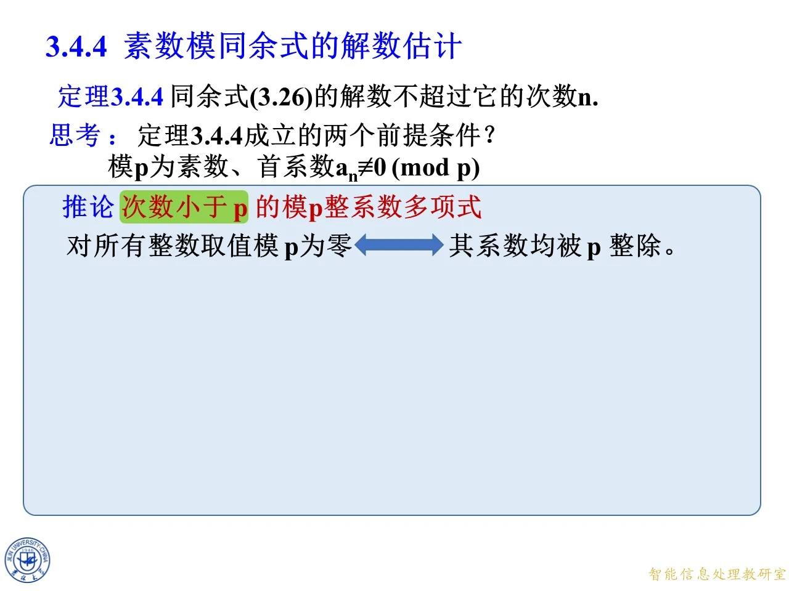
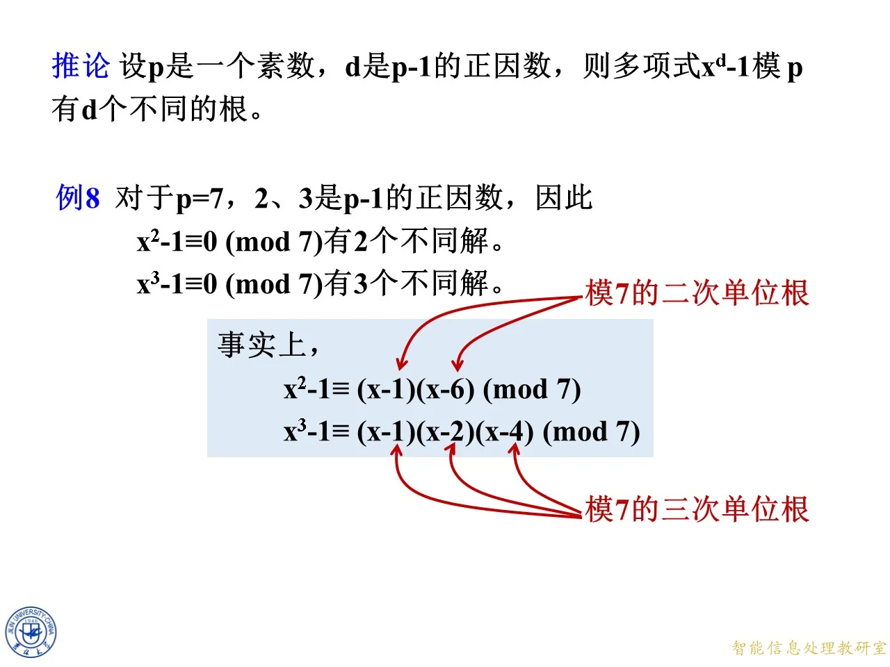

本节位于第三章高次同余式部分，核心是把“多项式的次数”转化为“模素数时不同解个数”的上界，并进一步给出达到上界的整除判据。学习时会反复使用因式定理、素数模中没有零因子以及费马小定理，最后再把这些工具用于高次同余式降次和单位根计数。清单含两次授课的同一内容，以下先按第二套页码完整讲解，再按第一套页码逐组复核，所有印刷错误均以实际复算为准。
定理 3.4.4：素数模同余式的根数上界
◆ p.232-233 ｜定理陈述与反证法证明
设同余式（3.26）为
f ( x ) = a n x n + a n − 1 x n − 1 + ⋯ + a 1 x + a 0 ≡ 0 ( m o d p ) , f(x)=a_nx^n+a_{n-1}x^{n-1}+\cdots+a_1x+a_0\equiv0\pmod p, f ( x ) = a n x n + a n − 1 x n − 1 + ⋯ + a 1 x + a 0 ≡ 0 ( mod p ) , p p p a n ≢ 0 ( m o d p ) a_n\not\equiv0\pmod p a n ≡ 0 ( mod p ) p p p n n n n n n
证明采用反证法。若有 n + 1 n+1 n + 1 x ≡ α i ( m o d p ) x\equiv\alpha_i\pmod p x ≡ α i ( mod p ) i = 1 , … , n + 1 i=1,\ldots,n+1 i = 1 , … , n + 1 n n n f ( x ) ≡ a n ( x − α 1 ) ( x − α 2 ) ⋯ ( x − α n ) ( m o d p ) . f(x)\equiv a_n(x-\alpha_1)(x-\alpha_2)\cdots(x-\alpha_n)\pmod p. f ( x ) ≡ a n ( x − α 1 ) ( x − α 2 ) ⋯ ( x − α n ) ( mod p ) . n + 1 n+1 n + 1 a n ( α n + 1 − α 1 ) ⋯ ( α n + 1 − α n ) ≡ 0 ( m o d p ) . a_n(\alpha_{n+1}-\alpha_1)\cdots(\alpha_{n+1}-\alpha_n)\equiv0\pmod p. a n ( α n + 1 − α 1 ) ⋯ ( α n + 1 − α n ) ≡ 0 ( mod p ) . p p p p p p p p p a n ≢ 0 ( m o d p ) a_n\not\equiv0\pmod p a n ≡ 0 ( mod p ) i i i α n + 1 − α i ≡ 0 ( m o d p ) \alpha_{n+1}-\alpha_i\equiv0\pmod p α n + 1 − α i ≡ 0 ( mod p ) n + 1 n+1 n + 1
拓展 （课件外补充）：证明的关键不是“多项式看起来像整数系数”，而是素数模剩余类构成有限域，因而没有非零零因子。若把模换成合数，由乘积为零不能推出某一个因子为零，证明便在此处失效。
例 5：三个三次同余式的不同解数
◆ p.234-237 ｜先因式分解，再按剩余类计数
题目要求分别求 x 3 − 2 x 2 + x − 2 ≡ 0 ( m o d 7 ) x^3-2x^2+x-2\equiv0\pmod7 x 3 − 2 x 2 + x − 2 ≡ 0 ( mod 7 ) x 3 − 3 x − 2 ≡ 0 ( m o d 7 ) x^3-3x-2\equiv0\pmod7 x 3 − 3 x − 2 ≡ 0 ( mod 7 ) x 3 − 7 x 2 + 14 x − 8 ≡ 0 ( m o d 107 ) x^3-7x^2+14x-8\equiv0\pmod{107} x 3 − 7 x 2 + 14 x − 8 ≡ 0 ( mod 107 ) 3 3 3
第（1）题分组分解：
x 3 − 2 x 2 + x − 2 = x 2 ( x − 2 ) + ( x − 2 ) = ( x − 2 ) ( x 2 + 1 ) . x^3-2x^2+x-2=x^2(x-2)+(x-2)=(x-2)(x^2+1). x 3 − 2 x 2 + x − 2 = x 2 ( x − 2 ) + ( x − 2 ) = ( x − 2 ) ( x 2 + 1 ) . 7 7 7 0 , 1 , 4 , 2 , 2 , 4 , 1 0,1,4,2,2,4,1 0 , 1 , 4 , 2 , 2 , 4 , 1 6 ≡ − 1 ( m o d 7 ) 6\equiv-1\pmod7 6 ≡ − 1 ( mod 7 ) x 2 + 1 ≡ 0 ( m o d 7 ) x^2+1\equiv0\pmod7 x 2 + 1 ≡ 0 ( mod 7 ) x ≡ 2 ( m o d 7 ) x\equiv2\pmod7 x ≡ 2 ( mod 7 ) 1 1 1
第（2）题先凑出可分解形式：
x 3 − 3 x − 2 = x 3 − 4 x + x − 2 = ( x − 2 ) ( x 2 + 2 x + 1 ) = ( x − 2 ) ( x + 1 ) 2 . x^3-3x-2=x^3-4x+x-2=(x-2)(x^2+2x+1)=(x-2)(x+1)^2. x 3 − 3 x − 2 = x 3 − 4 x + x − 2 = ( x − 2 ) ( x 2 + 2 x + 1 ) = ( x − 2 ) ( x + 1 ) 2 . x ≡ 2 ( m o d 7 ) x\equiv2\pmod7 x ≡ 2 ( mod 7 ) x + 1 ≡ 0 ( m o d 7 ) x+1\equiv0\pmod7 x + 1 ≡ 0 ( mod 7 ) x ≡ 6 ( m o d 7 ) x\equiv6\pmod7 x ≡ 6 ( mod 7 ) − 1 -1 − 1 2 2 2 2 2 2
第（3）题利用 x 3 − 8 = ( x − 2 ) ( x 2 + 2 x + 4 ) x^3-8=(x-2)(x^2+2x+4) x 3 − 8 = ( x − 2 ) ( x 2 + 2 x + 4 ) x 3 − 7 x 2 + 14 x − 8 = ( x − 2 ) ( x 2 + 2 x + 4 − 7 x ) = ( x − 2 ) ( x − 1 ) ( x − 4 ) . x^3-7x^2+14x-8=(x-2)(x^2+2x+4-7x)=(x-2)(x-1)(x-4). x 3 − 7 x 2 + 14 x − 8 = ( x − 2 ) ( x 2 + 2 x + 4 − 7 x ) = ( x − 2 ) ( x − 1 ) ( x − 4 ) . 107 107 107 1 , 2 , 4 1,2,4 1 , 2 , 4 107 107 107 x ≡ 1 , 2 , 4 ( m o d 107 ) x\equiv1,2,4\pmod{107} x ≡ 1 , 2 , 4 ( mod 107 ) 3 3 3 { 2 } \{2\} { 2 } { 2 , 6 } \{2,6\} { 2 , 6 } { 1 , 2 , 4 } \{1,2,4\} { 1 , 2 , 4 }
练习：素数模与合数模不能混用根数结论
◆ p.238-242 ｜三次单位根与模 9 9 9
练习 1 求 x 3 − 1 ≡ 0 ( m o d 7 ) x^3-1\equiv0\pmod7 x 3 − 1 ≡ 0 ( mod 7 ) 7 7 7 x 3 − 1 = ( x − 1 ) ( x 2 + x + 1 ) ≡ ( x − 1 ) ( x 2 − 6 x + 8 ) ≡ ( x − 1 ) ( x − 2 ) ( x − 4 ) ( m o d 7 ) . x^3-1=(x-1)(x^2+x+1)\equiv(x-1)(x^2-6x+8)\equiv(x-1)(x-2)(x-4)\pmod7. x 3 − 1 = ( x − 1 ) ( x 2 + x + 1 ) ≡ ( x − 1 ) ( x 2 − 6 x + 8 ) ≡ ( x − 1 ) ( x − 2 ) ( x − 4 ) ( mod 7 ) . x + 1 ≡ x − 6 ( m o d 7 ) x+1\equiv x-6\pmod7 x + 1 ≡ x − 6 ( mod 7 ) 1 ≡ 8 ( m o d 7 ) 1\equiv8\pmod7 1 ≡ 8 ( mod 7 ) x ≡ 1 , 2 , 4 ( m o d 7 ) x\equiv1,2,4\pmod7 x ≡ 1 , 2 , 4 ( mod 7 ) 3 3 3
练习 2 求 x 6 ≡ 1 ( m o d 9 ) x^6\equiv1\pmod9 x 6 ≡ 1 ( mod 9 ) x = 0 , 1 , … , 8 x=0,1,\ldots,8 x = 0 , 1 , … , 8 x 6 − 1 x^6-1 x 6 − 1 9 9 9 8 , 0 , 0 , 8 , 0 , 0 , 8 , 0 , 0 , 8,0,0,8,0,0,8,0,0, 8 , 0 , 0 , 8 , 0 , 0 , 8 , 0 , 0 , x ≡ 1 , 2 , 4 , 5 , 7 , 8 ( m o d 9 ) x\equiv1,2,4,5,7,8\pmod9 x ≡ 1 , 2 , 4 , 5 , 7 , 8 ( mod 9 ) ± 1 , ± 2 , ± 4 \pm1,\pm2,\pm4 ± 1 , ± 2 , ± 4
本页思考题问能否把 x 6 − 1 x^6-1 x 6 − 1 9 9 9 ( x + 1 ) ( x − 1 ) ( x + 2 ) ( x − 2 ) ( x + 4 ) ( x − 4 ) = x 6 − 21 x 4 + 84 x 2 − 64 , (x+1)(x-1)(x+2)(x-2)(x+4)(x-4)=x^6-21x^4+84x^2-64, ( x + 1 ) ( x − 1 ) ( x + 2 ) ( x − 2 ) ( x + 4 ) ( x − 4 ) = x 6 − 21 x 4 + 84 x 2 − 64 , 9 9 9 x 6 + 6 x 4 + 3 x 2 − 1 x^6+6x^4+3x^2-1 x 6 + 6 x 4 + 3 x 2 − 1 x 6 − 1 x^6-1 x 6 − 1 x 4 x^4 x 4 6 6 6 0 0 0 x 6 − 1 x^6-1 x 6 − 1
定理 3.4.4 的两个前提与系数降阶
◆ p.243-246 ｜为什么必须限定素数模和非零首系数
本组先明确两个前提：p p p a n ≢ 0 ( m o d p ) a_n\not\equiv0\pmod p a n ≡ 0 ( mod p ) p p p n n n p p p n n n
思考 1 问非素数模时解数是否必定不超过次数，答案是否定的。x 6 ≡ 1 ( m o d 9 ) x^6\equiv1\pmod9 x 6 ≡ 1 ( mod 9 ) 6 6 6 x 2 ≡ 1 ( m o d 21 ) x^2\equiv1\pmod{21} x 2 ≡ 1 ( mod 21 ) x ≡ 1 , 8 , 13 , 20 ( m o d 21 ) , x\equiv1,8,13,20\pmod{21}, x ≡ 1 , 8 , 13 , 20 ( mod 21 ) , ± 1 , ± 8 \pm1,\pm8 ± 1 , ± 8 4 4 4 2 2 2
◆ p.247-256 ｜高位系数陆续消失时怎样估计根数
考察一般式 a n x n + ⋯ + a 1 x + a 0 ≡ 0 ( m o d p ) a_nx^n+\cdots+a_1x+a_0\equiv0\pmod p a n x n + ⋯ + a 1 x + a 0 ≡ 0 ( mod p ) a n , a n − 1 , … a_n,a_{n-1},\ldots a n , a n − 1 , … p p p a n ≡ a n − 1 ≡ ⋯ ≡ a 2 ≡ 0 ( m o d p ) a_n\equiv a_{n-1}\equiv\cdots\equiv a_2\equiv0\pmod p a n ≡ a n − 1 ≡ ⋯ ≡ a 2 ≡ 0 ( mod p ) a 1 ≢ 0 ( m o d p ) a_1\not\equiv0\pmod p a 1 ≡ 0 ( mod p )
这些高位项在模 p p p a 1 x + a 0 ≡ 0 ( m o d p ) a_1x+a_0\equiv0\pmod p a 1 x + a 0 ≡ 0 ( mod p ) 1 1 1 a 1 a_1 a 1 p p p x ≡ − a 0 a 1 − 1 ( m o d p ) x\equiv-a_0a_1^{-1}\pmod p x ≡ − a 0 a 1 − 1 ( mod p ) n n n p p p
◆ p.257-260 ｜所有系数都被模数整除的情形
若进一步有 a 1 ≡ 0 ( m o d p ) a_1\equiv0\pmod p a 1 ≡ 0 ( mod p ) a 0 ≢ 0 ( m o d p ) a_0\not\equiv0\pmod p a 0 ≡ 0 ( mod p ) a 0 ≡ 0 ( m o d p ) a_0\equiv0\pmod p a 0 ≡ 0 ( mod p ) a n a_n a n a 0 a_0 a 0 a i ≡ 0 ( m o d p ) a_i\equiv0\pmod p a i ≡ 0 ( mod p ) p p p p p p p p p
这个情形不是定理 3.4.4 的反例，因为模 p p p n n n
◆ p.261-262 ｜反向思考的起点：能否只有最高位系数为零
现在设形式次数 n < p n<p n < p p p p a n ≡ 0 ( m o d p ) a_n\equiv0\pmod p a n ≡ 0 ( mod p ) a n − 1 ≢ 0 ( m o d p ) a_{n-1}\not\equiv0\pmod p a n − 1 ≡ 0 ( mod p ) n − 1 n-1 n − 1 n − 1 n-1 n − 1 p p p a n − 1 a_{n-1} a n − 1 p p p
◆ p.263-264 ｜继续排除倒数第二个非零系数
本组把试探推进到 a n ≡ a n − 1 ≡ 0 ( m o d p ) a_n\equiv a_{n-1}\equiv0\pmod p a n ≡ a n − 1 ≡ 0 ( mod p ) a n − 2 ≢ 0 ( m o d p ) a_{n-2}\not\equiv0\pmod p a n − 2 ≡ 0 ( mod p ) n − 2 n-2 n − 2 n − 2 n-2 n − 2 p p p a n − 2 a_{n-2} a n − 2 n < p n<p n < p n − 2 < p n-2<p n − 2 < p
◆ p.265-266 ｜从最高位向低位逐级排除
同样的论证可向低次项继续：只要某一个系数是最高位的非零系数，它下方的多项式就有一个严格小于 p p p p p p p p p
◆ p.267-270 ｜反向结论的完整证明
本组给出最终结论：若 n < p n<p n < p p p p a n ≡ a n − 1 ≡ ⋯ ≡ a 1 ≡ a 0 ≡ 0 ( m o d p ) . a_n\equiv a_{n-1}\equiv\cdots\equiv a_1\equiv a_0\equiv0\pmod p. a n ≡ a n − 1 ≡ ⋯ ≡ a 1 ≡ a 0 ≡ 0 ( mod p ) . p p p a k a_k a k k k k 0 ≤ k ≤ n < p 0\le k\le n<p 0 ≤ k ≤ n < p k < p k<p k < p p p p
◆ p.271-273 ｜推论：恒为零与零多项式系数等价
把前两组正反结论合并，得到推论：对于次数小于 p p p p p p p p p p p p
正向由全部系数为零立即推出；反向用根数上界证明。若某系数不被 p p p n < p n<p n < p p p p p p p p p p
例 6、同余式降次与恒等零的等价刻画
◆ p.274-278 ｜例 6 与定理 3.4.1 的回顾
例 6 求 7 x 3 − 21 ≡ 0 ( m o d 7 ) 7x^3-21\equiv0\pmod7 7 x 3 − 21 ≡ 0 ( mod 7 ) 7 ( x 3 − 3 ) 7(x^3-3) 7 ( x 3 − 3 ) 7 7 7 0 , 1 , 2 , 3 , 4 , 5 , 6 0,1,2,3,4,5,6 0 , 1 , 2 , 3 , 4 , 5 , 6 7 7 7 7 7 7 7 x 3 − 21 7x^3-21 7 x 3 − 21
本组还回顾 3.4.2 节的定理 3.4.1：素数模 n n n p − 1 p-1 p − 1 p p p x p ≡ x ( m o d p ) , x^p\equiv x\pmod p, x p ≡ x ( mod p ) , p p p x p − x x^p-x x p − x p p p p p p
◆ p.279-280 ｜恒等零、全部根与带余除法的关系
设任意多项式作带余除法
f ( x ) = q ( x ) ( x p − x ) + r ( x ) , deg r < p . f(x)=q(x)(x^p-x)+r(x),\qquad \deg r<p. f ( x ) = q ( x ) ( x p − x ) + r ( x ) , deg r < p . x p − x x^p-x x p − x f ( a ) ≡ 0 ( m o d p ) f(a)\equiv0\pmod p f ( a ) ≡ 0 ( mod p ) a a a r ( a ) ≡ 0 ( m o d p ) r(a)\equiv0\pmod p r ( a ) ≡ 0 ( mod p ) a a a p p p deg r < p \deg r<p deg r < p r r r p p p f ( x ) ≡ q ( x ) ( x p − x ) ( m o d p ) f(x)\equiv q(x)(x^p-x)\pmod p f ( x ) ≡ q ( x ) ( x p − x ) ( mod p )
当 deg f < p \deg f<p deg f < p f f f f f f p p p
◆ p.281-283 ｜次数条件在哪里使用，何时不能删去
本组用颜色区分两种范围：涉及余式 r r r f f f deg r < p \deg r<p deg r < p f f f p p p deg f < p \deg f<p deg f < p
课件给出的反例是 f ( x ) = x p − x f(x)=x^p-x f ( x ) = x p − x p p p p p p 1 1 1 − 1 -1 − 1 p p p p p p
◆ p.284 ｜回到最简形式的推论
本页再次单独显示推论，便于记忆：若 deg f < p \deg f<p deg f < p f ( a ) ≡ 0 ( m o d p ) f(a)\equiv0\pmod p f ( a ) ≡ 0 ( mod p ) a a a f f f p p p p p p
两个降次例题与多项式整除的语言
◆ p.285-286 ｜利用 x p ≡ x ( m o d p ) x^p\equiv x\pmod p x p ≡ x ( mod p )
第一个未编号例题求
f ( x ) = x p + 2 + 2 x p + 1 + 3 x p − x 3 − 2 x 2 − ( p + 3 ) x ≡ 0 ( m o d p ) . f(x)=x^{p+2}+2x^{p+1}+3x^p-x^3-2x^2-(p+3)x\equiv0\pmod p. f ( x ) = x p + 2 + 2 x p + 1 + 3 x p − x 3 − 2 x 2 − ( p + 3 ) x ≡ 0 ( mod p ) . − ( p + 3 ) x -(p+3)x − ( p + 3 ) x − 3 x ( m o d p ) -3x\pmod p − 3 x ( mod p ) f ( x ) ≡ x p + 2 + 2 x p + 1 + 3 x p − x 3 − 2 x 2 − 3 x ≡ ( x p − x ) ( x 2 + 2 x + 3 ) ( m o d p ) . f(x)\equiv x^{p+2}+2x^{p+1}+3x^p-x^3-2x^2-3x\equiv(x^p-x)(x^2+2x+3)\pmod p. f ( x ) ≡ x p + 2 + 2 x p + 1 + 3 x p − x 3 − 2 x 2 − 3 x ≡ ( x p − x ) ( x 2 + 2 x + 3 ) ( mod p ) . x p − x ≡ 0 ( m o d p ) x^p-x\equiv0\pmod p x p − x ≡ 0 ( mod p ) x ≡ 0 , 1 , … , p − 1 ( m o d p ) x\equiv0,1,\ldots,p-1\pmod p x ≡ 0 , 1 , … , p − 1 ( mod p ) p p p
第二个未编号例题求 x p + 1 + ( p + 3 ) x + 2 ≡ 0 ( m o d p ) x^{p+1}+(p+3)x+2\equiv0\pmod p x p + 1 + ( p + 3 ) x + 2 ≡ 0 ( mod p ) x p + 1 = x p ⋅ x ≡ x 2 ( m o d p ) x^{p+1}=x^p\cdot x\equiv x^2\pmod p x p + 1 = x p ⋅ x ≡ x 2 ( mod p ) ( p + 3 ) x ≡ 3 x ( m o d p ) (p+3)x\equiv3x\pmod p ( p + 3 ) x ≡ 3 x ( mod p ) x p + 1 + ( p + 3 ) x + 2 ≡ x 2 + 3 x + 2 ≡ ( x + 1 ) ( x + 2 ) ( m o d p ) . x^{p+1}+(p+3)x+2\equiv x^2+3x+2\equiv(x+1)(x+2)\pmod p. x p + 1 + ( p + 3 ) x + 2 ≡ x 2 + 3 x + 2 ≡ ( x + 1 ) ( x + 2 ) ( mod p ) . p > 2 p>2 p > 2 x ≡ p − 1 , p − 2 ( m o d p ) x\equiv p-1,p-2\pmod p x ≡ p − 1 , p − 2 ( mod p ) 拓展 （课件外补充）：p = 2 p=2 p = 2 p − 1 ≡ p − 2 ( m o d 2 ) p-1\equiv p-2\pmod2 p − 1 ≡ p − 2 ( mod 2 ) 2 2 2
本页还引出：首一多项式若能分解为互异一次因式之积，就应在模 p p p x p − x x^p-x x p − x
◆ p.287-290 ｜把整除条件改写为余式条件
设 f f f f f f p p p x p − x x^p-x x p − x q ( x ) q(x) q ( x ) x p − x ≡ q ( x ) f ( x ) ( m o d p ) . x^p-x\equiv q(x)f(x)\pmod p. x p − x ≡ q ( x ) f ( x ) ( mod p ) . f f f x p − x x^p-x x p − x x p − x = q ( x ) f ( x ) + r ( x ) , x^p-x=q(x)f(x)+r(x), x p − x = q ( x ) f ( x ) + r ( x ) , deg r < deg f \deg r<\deg f deg r < deg f p p p r ( x ) ≡ 0 ( m o d p ) r(x)\equiv0\pmod p r ( x ) ≡ 0 ( mod p ) p p p r r r
因此，判断整除不必猜商式，只需做一次多项式除法并检查余式系数。这也把几何上“根是否足够多”的问题转成可执行的代数计算。
◆ p.291-294 ｜与定理 3.4.4 推论的衔接
本组把前一页的余式判断与定理 3.4.4 的推论放在同一图中。设 deg f = n ≤ p \deg f=n\le p deg f = n ≤ p deg r < n ≤ p \deg r<n\le p deg r < n ≤ p deg r < p \deg r<p deg r < p r r r p p p r r r p p p
又因为 x p − x x^p-x x p − x x p − x = q ( x ) f ( x ) + r ( x ) x^p-x=q(x)f(x)+r(x) x p − x = q ( x ) f ( x ) + r ( x ) f f f p p p
◆ p.295-296 ｜从整除转向“恰有次数个解”
本组在图左加入待回答的问题：f ( x ) ≡ 0 ( m o d p ) f(x)\equiv0\pmod p f ( x ) ≡ 0 ( mod p ) n n n x p − x x^p-x x p − x x p − x x^p-x x p − x p p p n n n n n n n n n x p − x x^p-x x p − x n n n
定理 3.4.5：根数达到次数的充要条件
◆ p.297-299 ｜余式系数判据与双向证明
定理 3.4.5 设 p p p 1 ≤ n ≤ p 1\le n\le p 1 ≤ n ≤ p f ( x ) = x n + a n − 1 x n − 1 + ⋯ + a 1 x + a 0 f(x)=x^n+a_{n-1}x^{n-1}+\cdots+a_1x+a_0 f ( x ) = x n + a n − 1 x n − 1 + ⋯ + a 1 x + a 0 f ( x ) ≡ 0 ( m o d p ) f(x)\equiv0\pmod p f ( x ) ≡ 0 ( mod p ) n n n x p − x x^p-x x p − x f ( x ) f(x) f ( x ) p p p f ( x ) ∣ x p − x f(x)\mid x^p-x f ( x ) ∣ x p − x p p p
必要性：设 n n n α 1 , … , α n \alpha_1,\ldots,\alpha_n α 1 , … , α n n n n deg f = n \deg f=n deg f = n 1 1 1 f ( x ) ≡ ∏ i = 1 n ( x − α i ) ( m o d p ) . f(x)\equiv\prod_{i=1}^n(x-\alpha_i)\pmod p. f ( x ) ≡ i = 1 ∏ n ( x − α i ) ( mod p ) . x p − x x^p-x x p − x p p p p p p x − a x-a x − a α i \alpha_i α i
充分性：设 x p − x ≡ q ( x ) f ( x ) ( m o d p ) x^p-x\equiv q(x)f(x)\pmod p x p − x ≡ q ( x ) f ( x ) ( mod p ) deg q = p − n \deg q=p-n deg q = p − n p p p f f f q q q f f f s s s q q q p − s p-s p − s p − n p-n p − n p − s ≤ p − n p-s\le p-n p − s ≤ p − n s ≥ n s\ge n s ≥ n s ≤ n s\le n s ≤ n s = n s=n s = n
例 7：用余式判断是否有三个解
◆ p.300-302 ｜首一化、带余除法与直接因式分解
题目判断 2 x 3 + 5 x 2 + 6 x + 1 ≡ 0 ( m o d 7 ) 2x^3+5x^2+6x+1\equiv0\pmod7 2 x 3 + 5 x 2 + 6 x + 1 ≡ 0 ( mod 7 ) 2 ⋅ 4 ≡ 1 ( m o d 7 ) 2\cdot4\equiv1\pmod7 2 ⋅ 4 ≡ 1 ( mod 7 ) 4 4 4 4 ( 2 x 3 + 5 x 2 + 6 x + 1 ) = 8 x 3 + 20 x 2 + 24 x + 4 ≡ x 3 − x 2 + 3 x − 3 ( m o d 7 ) . 4(2x^3+5x^2+6x+1)=8x^3+20x^2+24x+4\equiv x^3-x^2+3x-3\pmod7. 4 ( 2 x 3 + 5 x 2 + 6 x + 1 ) = 8 x 3 + 20 x 2 + 24 x + 4 ≡ x 3 − x 2 + 3 x − 3 ( mod 7 ) . g ( x ) g(x) g ( x ) x 7 − x = g ( x ) ( x 4 + x 3 − 2 x 2 − 2 x + 7 ) + ( 7 x 2 − 28 x + 21 ) . x^7-x=g(x)(x^4+x^3-2x^2-2x+7)+(7x^2-28x+21). x 7 − x = g ( x ) ( x 4 + x 3 − 2 x 2 − 2 x + 7 ) + ( 7 x 2 − 28 x + 21 ) . 7 x 2 − 28 x + 21 7x^2-28x+21 7 x 2 − 28 x + 21 7 7 7 3 3 3 g g g 2 2 2
课件随后用因式分解验证：
2 x 3 + 5 x 2 + 6 x + 1 ≡ 2 ( x 3 + 6 x 2 + 3 x + 4 ) ≡ 2 ( x 2 − 4 ) ( x + 6 ) ( m o d 7 ) . 2x^3+5x^2+6x+1\equiv2(x^3+6x^2+3x+4)\equiv2(x^2-4)(x+6)\pmod7. 2 x 3 + 5 x 2 + 6 x + 1 ≡ 2 ( x 3 + 6 x 2 + 3 x + 4 ) ≡ 2 ( x 2 − 4 ) ( x + 6 ) ( mod 7 ) . x 2 − 4 ≡ ( x − 2 ) ( x + 2 ) x^2-4\equiv(x-2)(x+2) x 2 − 4 ≡ ( x − 2 ) ( x + 2 ) x + 6 ≡ x − 1 ( m o d 7 ) x+6\equiv x-1\pmod7 x + 6 ≡ x − 1 ( mod 7 ) x + 2 ≡ x − 5 ( m o d 7 ) x+2\equiv x-5\pmod7 x + 2 ≡ x − 5 ( mod 7 ) 2 ( x − 1 ) ( x − 2 ) ( x − 5 ) ≡ 0 ( m o d 7 ) 2(x-1)(x-2)(x-5)\equiv0\pmod7 2 ( x − 1 ) ( x − 2 ) ( x − 5 ) ≡ 0 ( mod 7 ) 1 , 2 , 5 1,2,5 1 , 2 , 5 7 7 7 1 , 0 , 0 , 6 , 2 , 0 , 5 1,0,0,6,2,0,5 1 , 0 , 0 , 6 , 2 , 0 , 5
三道思考：先消去模数倍数，再利用可逆系数
◆ p.303-305 ｜思考（1）
求 ( x − 2 ) ( x − 3 ) ( x − 5 ) + 7 x 100 ≡ 0 ( m o d 7 ) (x-2)(x-3)(x-5)+7x^{100}\equiv0\pmod7 ( x − 2 ) ( x − 3 ) ( x − 5 ) + 7 x 100 ≡ 0 ( mod 7 ) 7 x 100 ≡ 0 ( m o d 7 ) 7x^{100}\equiv0\pmod7 7 x 100 ≡ 0 ( mod 7 ) ( x − 2 ) ( x − 3 ) ( x − 5 ) ≡ 0 ( m o d 7 ) . (x-2)(x-3)(x-5)\equiv0\pmod7. ( x − 2 ) ( x − 3 ) ( x − 5 ) ≡ 0 ( mod 7 ) . 7 7 7 x − 2 x-2 x − 2 x − 3 x-3 x − 3 x − 5 x-5 x − 5 x ≡ 2 , 3 , 5 ( m o d 7 ) x\equiv2,3,5\pmod7 x ≡ 2 , 3 , 5 ( mod 7 ) 3 3 3 x 7 − x x^7-x x 7 − x
◆ p.306-307 ｜思考（2）
求 4 ( x − 2 ) ( x − 3 ) ( x − 5 ) + 7 x 100 ≡ 0 ( m o d 7 ) 4(x-2)(x-3)(x-5)+7x^{100}\equiv0\pmod7 4 ( x − 2 ) ( x − 3 ) ( x − 5 ) + 7 x 100 ≡ 0 ( mod 7 ) 7 x 100 7x^{100} 7 x 100 4 ( x − 2 ) ( x − 3 ) ( x − 5 ) ≡ 0 ( m o d 7 ) 4(x-2)(x-3)(x-5)\equiv0\pmod7 4 ( x − 2 ) ( x − 3 ) ( x − 5 ) ≡ 0 ( mod 7 ) gcd ( 4 , 7 ) = 1 \gcd(4,7)=1 g cd( 4 , 7 ) = 1 4 4 4 2 2 2 x ≡ 2 , 3 , 5 ( m o d 7 ) x\equiv2,3,5\pmod7 x ≡ 2 , 3 , 5 ( mod 7 ) 3 3 3 4 4 4
◆ p.308-309 ｜思考（3）
求
4 ( x − 2 ) ( x − 3 ) ( x − 5 ) + x 17 + 21 x 15 − x 11 + x 7 − x ≡ 0 ( m o d 7 ) 4(x-2)(x-3)(x-5)+x^{17}+21x^{15}-x^{11}+x^7-x\equiv0\pmod7 4 ( x − 2 ) ( x − 3 ) ( x − 5 ) + x 17 + 21 x 15 − x 11 + x 7 − x ≡ 0 ( mod 7 ) 21 x 15 ≡ 0 ( m o d 7 ) 21x^{15}\equiv0\pmod7 21 x 15 ≡ 0 ( mod 7 ) x 7 − x ≡ 0 ( m o d 7 ) x^7-x\equiv0\pmod7 x 7 − x ≡ 0 ( mod 7 ) x 7 ≡ x ( m o d 7 ) x^7\equiv x\pmod7 x 7 ≡ x ( mod 7 ) x 17 ≡ x 5 ( m o d 7 ) x^{17}\equiv x^5\pmod7 x 17 ≡ x 5 ( mod 7 ) x 11 ≡ x 5 ( m o d 7 ) x^{11}\equiv x^5\pmod7 x 11 ≡ x 5 ( mod 7 ) x 17 − x 11 ≡ 0 ( m o d 7 ) x^{17}-x^{11}\equiv0\pmod7 x 17 − x 11 ≡ 0 ( mod 7 ) 4 ( x − 2 ) ( x − 3 ) ( x − 5 ) ≡ 0 ( m o d 7 ) 4(x-2)(x-3)(x-5)\equiv0\pmod7 4 ( x − 2 ) ( x − 3 ) ( x − 5 ) ≡ 0 ( mod 7 ) x ≡ 2 , 3 , 5 ( m o d 7 ) x\equiv2,3,5\pmod7 x ≡ 2 , 3 , 5 ( mod 7 ) 3 3 3
定理 3.4.5 的推论与单位根
◆ p.310-311 ｜当 d ∣ p − 1 d\mid p-1 d ∣ p − 1 d d d
思考题求 x d − 1 ≡ 0 ( m o d p ) x^d-1\equiv0\pmod p x d − 1 ≡ 0 ( mod p ) d d d p − 1 p-1 p − 1 p − 1 = d q p-1=dq p − 1 = d q x p − 1 − 1 = ( x d ) q − 1 = ( x d − 1 ) ( x d ( q − 1 ) + x d ( q − 2 ) + ⋯ + x d + 1 ) . x^{p-1}-1=(x^d)^q-1=(x^d-1)(x^{d(q-1)}+x^{d(q-2)}+\cdots+x^d+1). x p − 1 − 1 = ( x d ) q − 1 = ( x d − 1 ) ( x d ( q − 1 ) + x d ( q − 2 ) + ⋯ + x d + 1 ) . x d − 1 ∣ x p − 1 − 1 x^d-1\mid x^{p-1}-1 x d − 1 ∣ x p − 1 − 1 x x x x d − 1 ∣ x p − x x^d-1\mid x^p-x x d − 1 ∣ x p − x x d − 1 x^d-1 x d − 1 x p − x x^p-x x p − x d d d x p − 1 − 1 x^{p-1}-1 x p − 1 − 1 p − 1 p-1 p − 1
◆ p.312 ｜推论的准确表述
本页把结论单列为推论：设 p p p d d d p − 1 p-1 p − 1 x d − 1 x^d-1 x d − 1 p p p d d d d ∣ p − 1 d\mid p-1 d ∣ p − 1 d ≤ p − 1 < p d\le p-1<p d ≤ p − 1 < p p − 1 p-1 p − 1 d d d d d d
拓展 （课件外补充）：这 d d d p p p d d d x d ≡ 1 ( m o d p ) x^d\equiv1\pmod p x d ≡ 1 ( mod p ) p = 13 p=13 p = 13 d = 4 d=4 d = 4 { 1 , 5 , 8 , 12 } \{1,5,8,12\} { 1 , 5 , 8 , 12 } 4 4 4 p = 7 p=7 p = 7 d = 4 d=4 d = 4 6 6 6 x 4 ≡ 1 ( m o d 7 ) x^4\equiv1\pmod7 x 4 ≡ 1 ( mod 7 ) { 1 , 6 } \{1,6\} { 1 , 6 } d ∣ p − 1 d\mid p-1 d ∣ p − 1 p − 1 p-1 p − 1
课件原图 · 10月9日授课 · 第 386 页 查看前后已收录原页 → 例 8：模 7 的二次与三次单位根
◆ p.313-316 ｜例 8 的具体数字
例 8 对于 p = 7 p=7 p = 7 2 , 3 2,3 2 , 3 p − 1 = 6 p-1=6 p − 1 = 6 x 2 − 1 ≡ 0 ( m o d 7 ) x^2-1\equiv0\pmod7 x 2 − 1 ≡ 0 ( mod 7 ) 2 2 2 x 3 − 1 ≡ 0 ( m o d 7 ) x^3-1\equiv0\pmod7 x 3 − 1 ≡ 0 ( mod 7 ) 3 3 3
事实核对：x 2 − 1 = ( x − 1 ) ( x + 1 ) ≡ ( x − 1 ) ( x − 6 ) ( m o d 7 ) x^2-1=(x-1)(x+1)\equiv(x-1)(x-6)\pmod7 x 2 − 1 = ( x − 1 ) ( x + 1 ) ≡ ( x − 1 ) ( x − 6 ) ( mod 7 ) 1 , 6 1,6 1 , 6 x 3 − 1 ≡ ( x − 1 ) ( x − 2 ) ( x − 4 ) ( m o d 7 ) x^3-1\equiv(x-1)(x-2)(x-4)\pmod7 x 3 − 1 ≡ ( x − 1 ) ( x − 2 ) ( x − 4 ) ( mod 7 ) 1 , 2 , 4 1,2,4 1 , 2 , 4 x 2 ≡ 1 x^2\equiv1 x 2 ≡ 1 { 1 , 6 } \{1,6\} { 1 , 6 } x 3 ≡ 1 x^3\equiv1 x 3 ≡ 1 { 1 , 2 , 4 } \{1,2,4\} { 1 , 2 , 4 } { 1 , 6 } \{1,6\} { 1 , 6 } { 1 , 2 , 4 } \{1,2,4\} { 1 , 2 , 4 }
这一页同时回应了前面模 9 的对照：素数模 7 下 x 6 − 1 x^6-1 x 6 − 1 x 7 − x x^7-x x 7 − x ⇒ \Rightarrow ⇒
例 9：模 7 十八次同余式的三种解法
◆ p.317-318 ｜方法一：除以 x 7 − x x^7-x x 7 − x
例 9 求解同余式
20 x 18 + 2 x 15 − x 10 + 4 x − 3 ≡ 0 ( m o d 7 ) . 20x^{18}+2x^{15}-x^{10}+4x-3\equiv0\pmod 7. 20 x 18 + 2 x 15 − x 10 + 4 x − 3 ≡ 0 ( mod 7 ) .
先把系数缩小：20 ≡ 6 ( m o d 7 ) 20\equiv6\pmod7 20 ≡ 6 ( mod 7 ) 6 x 18 + 2 x 15 − x 10 + 4 x − 3 ≡ 0 ( m o d 7 ) 6x^{18}+2x^{15}-x^{10}+4x-3\equiv0\pmod7 6 x 18 + 2 x 15 − x 10 + 4 x − 3 ≡ 0 ( mod 7 ) 6 x 18 + 2 x 15 − x 10 + 4 x − 3 = ( x 7 − x ) ( 6 x 11 + 2 x 8 + 6 x 5 − x 3 + 2 x 2 ) + ( 6 x 6 − x 4 + 2 x 3 + 4 x − 3 ) . 6x^{18}+2x^{15}-x^{10}+4x-3=(x^7-x)(6x^{11}+2x^8+6x^5-x^3+2x^2)+(6x^6-x^4+2x^3+4x-3). 6 x 18 + 2 x 15 − x 10 + 4 x − 3 = ( x 7 − x ) ( 6 x 11 + 2 x 8 + 6 x 5 − x 3 + 2 x 2 ) + ( 6 x 6 − x 4 + 2 x 3 + 4 x − 3 ) . x 7 − x x^7-x x 7 − x 6 x 6 − x 4 + 2 x 3 + 4 x − 3 ≡ 0 ( m o d 7 ) . 6x^6-x^4+2x^3+4x-3\equiv0\pmod 7. 6 x 6 − x 4 + 2 x 3 + 4 x − 3 ≡ 0 ( mod 7 ) .
◆ p.319 ｜方法二：指数循环逐项降次
对非零的 x x x x 6 ≡ 1 ( m o d 7 ) x^6\equiv1\pmod7 x 6 ≡ 1 ( mod 7 ) x 18 = ( x 6 ) 3 ≡ 1 x^{18}=(x^6)^3\equiv1 x 18 = ( x 6 ) 3 ≡ 1 x 15 ≡ x 3 x^{15}\equiv x^3 x 15 ≡ x 3 x 10 ≡ x 4 x^{10}\equiv x^4 x 10 ≡ x 4 6 x 18 + 2 x 15 − x 10 + 4 x − 3 ≡ 6 x 6 + 2 x 3 − x 4 + 4 x − 3 ( m o d 7 ) , 6x^{18}+2x^{15}-x^{10}+4x-3\equiv6x^6+2x^3-x^4+4x-3\pmod 7, 6 x 18 + 2 x 15 − x 10 + 4 x − 3 ≡ 6 x 6 + 2 x 3 − x 4 + 4 x − 3 ( mod 7 ) , 6 6 6 6 x 6 6x^6 6 x 6 x = 0 x=0 x = 0 x = 0 x=0 x = 0
◆ p.320-322 ｜方法三：换元 x 6 → 1 x^6\to1 x 6 → 1
因为 x ≡ 0 ( m o d 7 ) x\equiv0\pmod7 x ≡ 0 ( mod 7 ) x 6 x^6 x 6 1 1 1 6 ⋅ 1 − x 4 + 2 x 3 + 4 x − 3 ≡ 0 ( m o d 7 ) . 6\cdot1-x^4+2x^3+4x-3\equiv0\pmod 7. 6 ⋅ 1 − x 4 + 2 x 3 + 4 x − 3 ≡ 0 ( mod 7 ) . x ≡ 0 ( m o d p ) x\equiv0\pmod p x ≡ 0 ( mod p ) 化简后 同余式的解，不是看化简前的同余式。将 x = 0 , ± 1 , ± 2 , ± 3 x=0,\pm1,\pm2,\pm3 x = 0 , ± 1 , ± 2 , ± 3 x ≡ − 2 ≡ 5 ( m o d 7 ) x\equiv-2\equiv5\pmod 7 x ≡ − 2 ≡ 5 ( mod 7 )
拓展 （课件外补充）——课件答案校正：按印出的题面用 python 复算，这个结论不成立。原式 20 x 18 + 2 x 15 − x 10 + 4 x − 3 20x^{18}+2x^{15}-x^{10}+4x-3 20 x 18 + 2 x 15 − x 10 + 4 x − 3 x = 0 , 1 , 2 , 3 , 4 , 5 , 6 x=0,1,2,3,4,5,6 x = 0 , 1 , 2 , 3 , 4 , 5 , 6 4 , 1 , 4 , 2 , 3 , 5 , 3 4,1,4,2,3,5,3 4 , 1 , 4 , 2 , 3 , 5 , 3 1 , 4 , 2 , 3 , 5 , 3 1,4,2,3,5,3 1 , 4 , 2 , 3 , 5 , 3 x = 5 x=5 x = 5 5 ≢ 0 5\not\equiv0 5 ≡ 0 无解 ，课件印出的候选解 x ≡ 5 x\equiv5 x ≡ 5
◆ p.323-324 ｜错误示范：x 6 − 1 ≡ 0 ( m o d 7 ) x^6-1\equiv0\pmod 7 x 6 − 1 ≡ 0 ( mod 7 )
课件给出错用方法三的例子：x 6 − 1 ≡ 0 ( m o d 7 ) x^6-1\equiv0\pmod 7 x 6 − 1 ≡ 0 ( mod 7 ) x ≡ 0 x\equiv0 x ≡ 0 x 6 x^6 x 6 1 1 1 1 − 1 ≡ 0 ( m o d 7 ) 1-1\equiv0\pmod 7 1 − 1 ≡ 0 ( mod 7 ) x ≡ 0 , ± 1 , ± 2 , ± 3 ( m o d 7 ) x\equiv0,\pm1,\pm2,\pm3\pmod 7 x ≡ 0 , ± 1 , ± 2 , ± 3 ( mod 7 ) 0 0 0
错因：x 6 ≡ 1 x^6\equiv1 x 6 ≡ 1 1 − 1 ≡ 0 1-1\equiv0 1 − 1 ≡ 0 x x x x x x x ≡ 0 x\equiv0 x ≡ 0 x 6 ≡ 1 x^6\equiv1 x 6 ≡ 1 0 0 0 { 1 , 2 , 3 , 4 , 5 , 6 } \{1,2,3,4,5,6\} { 1 , 2 , 3 , 4 , 5 , 6 }
◆ p.325 ｜换元规则的正式表述
课件把规则定式化：比如 x 6 − 1 ≡ 0 ( m o d 7 ) x^6-1\equiv0\pmod 7 x 6 − 1 ≡ 0 ( mod 7 ) x ≡ 0 ( m o d p ) x\equiv0\pmod p x ≡ 0 ( mod p ) x 6 → 1 x^6\to1 x 6 → 1
◆ p.326 ｜再次强调错例
本页再次展示同一错例 x 6 − 1 ≡ 0 ( m o d 7 ) x^6-1\equiv0\pmod 7 x 6 − 1 ≡ 0 ( mod 7 )
例 10：模 5 十四次同余式的两种解法
◆ p.327-329 ｜例 10 题面
例 10 求解同余式
3 x 14 + 4 x 13 + 2 x 11 + x 9 + x 6 + x 3 + 12 x 2 + x ≡ 0 ( m o d 5 ) . 3x^{14}+4x^{13}+2x^{11}+x^9+x^6+x^3+12x^2+x\equiv0\pmod 5. 3 x 14 + 4 x 13 + 2 x 11 + x 9 + x 6 + x 3 + 12 x 2 + x ≡ 0 ( mod 5 ) .
◆ p.330 ｜解法一：除以 x 5 − x x^5-x x 5 − x
作带余除法（python 逐系数验证此恒等式成立）：
3 x 14 + 4 x 13 + 2 x 11 + x 9 + x 6 + x 3 + 12 x 2 + x = ( x 5 − x ) ( 3 x 9 + 4 x 8 + 2 x 6 + 3 x 5 + 5 x 4 + 2 x 2 + 4 x + 5 ) + ( 3 x 3 + 16 x 2 + 6 x ) . 3x^{14}+4x^{13}+2x^{11}+x^9+x^6+x^3+12x^2+x=(x^5-x)(3x^9+4x^8+2x^6+3x^5+5x^4+2x^2+4x+5)+(3x^3+16x^2+6x). 3 x 14 + 4 x 13 + 2 x 11 + x 9 + x 6 + x 3 + 12 x 2 + x = ( x 5 − x ) ( 3 x 9 + 4 x 8 + 2 x 6 + 3 x 5 + 5 x 4 + 2 x 2 + 4 x + 5 ) + ( 3 x 3 + 16 x 2 + 6 x ) . 3 x 3 + 16 x 2 + 6 x ≡ 0 ( m o d 5 ) 3x^3+16x^2+6x\equiv0\pmod 5 3 x 3 + 16 x 2 + 6 x ≡ 0 ( mod 5 ) 3 x 3 + 16 x 2 + 6 x 3x^3+16x^2+6x 3 x 3 + 16 x 2 + 6 x x = 0 , 1 , 2 , 3 , 4 x=0,1,2,3,4 x = 0 , 1 , 2 , 3 , 4 0 , 0 , 0 , 3 , 2 0,0,0,3,2 0 , 0 , 0 , 3 , 2 x ≡ 0 , 1 , 2 ( m o d 5 ) x\equiv0,1,2\pmod 5 x ≡ 0 , 1 , 2 ( mod 5 )
◆ p.331-333 ｜解法二：指数循环
由恒等同余式 x p − x ≡ 0 ( m o d p ) x^p-x\equiv0\pmod p x p − x ≡ 0 ( mod p ) x p ≡ x ( m o d p ) x^p\equiv x\pmod p x p ≡ x ( mod p ) k , t k,t k , t x k p + t ≡ x k x t ( m o d p ) ⟹ x k ( p − 1 ) + t ≡ x t ( m o d p ) . x^{kp+t}\equiv x^kx^t\pmod p\ \Longrightarrow\ x^{k(p-1)+t}\equiv x^t\pmod p. x k p + t ≡ x k x t ( mod p ) ⟹ x k ( p − 1 ) + t ≡ x t ( mod p ) . x 4 k + t ≡ x t ( m o d 5 ) x^{4k+t}\equiv x^t\pmod 5 x 4 k + t ≡ x t ( mod 5 ) x 14 ≡ x 10 ≡ x 6 ≡ x 2 x^{14}\equiv x^{10}\equiv x^6\equiv x^2 x 14 ≡ x 10 ≡ x 6 ≡ x 2 x 13 ≡ x 9 ≡ x 5 ≡ x x^{13}\equiv x^9\equiv x^5\equiv x x 13 ≡ x 9 ≡ x 5 ≡ x x 11 ≡ x 7 ≡ x 3 ( m o d 5 ) x^{11}\equiv x^7\equiv x^3\pmod 5 x 11 ≡ x 7 ≡ x 3 ( mod 5 ) 3 x 3 + 16 x 2 + 6 x ≡ 0 ( m o d 5 ) 3x^3+16x^2+6x\equiv0\pmod 5 3 x 3 + 16 x 2 + 6 x ≡ 0 ( mod 5 ) 2 ( 3 x 3 + 16 x 2 + 6 x ) ≡ x 3 + 2 x 2 + 2 x ≡ 0 ( m o d 5 ) . 2(3x^3+16x^2+6x)\equiv x^3+2x^2+2x\equiv0\pmod 5. 2 ( 3 x 3 + 16 x 2 + 6 x ) ≡ x 3 + 2 x 2 + 2 x ≡ 0 ( mod 5 ) . x 3 + 2 x 2 + 2 x x^3+2x^2+2x x 3 + 2 x 2 + 2 x x = 0 , 1 , 2 , 3 , 4 x=0,1,2,3,4 x = 0 , 1 , 2 , 3 , 4 0 , 0 , 0 , 1 , 4 0,0,0,1,4 0 , 0 , 0 , 1 , 4 x ≡ 0 , 1 , 2 ( m o d 5 ) x\equiv0,1,2\pmod 5 x ≡ 0 , 1 , 2 ( mod 5 )
◆ p.334-340 ｜注与课后练习（模 35）
注：一般地，解素数模 p p p p p p p p p
课后练习：求解同余式
25 x 25 + 20 x 23 − 3 x 15 − 40 x 12 + 6 x 11 + 15 x 7 + 3 x 5 + 16 x 3 − 7 x ≡ 0 ( m o d 35 ) 25x^{25}+20x^{23}-3x^{15}-40x^{12}+6x^{11}+15x^7+3x^5+16x^3-7x\equiv0\pmod{35} 25 x 25 + 20 x 23 − 3 x 15 − 40 x 12 + 6 x 11 + 15 x 7 + 3 x 5 + 16 x 3 − 7 x ≡ 0 ( mod 35 ) 35 = 5 × 7 35=5\times7 35 = 5 × 7 x ≡ 0 , 4 , 10 , 11 , 14 , 21 , 24 , 25 , 31 ( m o d 35 ) x\equiv0,4,10,11,14,21,24,25,31\pmod{35} x ≡ 0 , 4 , 10 , 11 , 14 , 21 , 24 , 25 , 31 ( mod 35 )
拓展 （课件外补充）——课件印刷答案校正：按印出的多项式用 python 逐类复算，模 5 的解为 { 0 , 1 , 4 } \{0,1,4\} { 0 , 1 , 4 } { 0 , 1 } \{0,1\} { 0 , 1 } 25 x 25 ≡ 20 x 23 ≡ 40 x 12 ≡ 15 x 7 ≡ 0 25x^{25}\equiv20x^{23}\equiv40x^{12}\equiv15x^7\equiv0 25 x 25 ≡ 20 x 23 ≡ 40 x 12 ≡ 15 x 7 ≡ 0 x 15 ≡ x 3 x^{15}\equiv x^3 x 15 ≡ x 3 x 11 ≡ x 3 x^{11}\equiv x^3 x 11 ≡ x 3 x 5 ≡ x x^5\equiv x x 5 ≡ x ≡ − 3 x 3 + x 3 + 3 x + x 3 − 2 x ≡ x − x 3 ( m o d 5 ) \equiv-3x^3+x^3+3x+x^3-2x\equiv x-x^3\pmod 5 ≡ − 3 x 3 + x 3 + 3 x + x 3 − 2 x ≡ x − x 3 ( mod 5 ) x ( x − 1 ) ( x + 1 ) ≡ 0 x(x-1)(x+1)\equiv0 x ( x − 1 ) ( x + 1 ) ≡ 0 { 0 , 1 , 4 } \{0,1,4\} { 0 , 1 , 4 } x 25 ≡ x x^{25}\equiv x x 25 ≡ x x 23 ≡ x 5 x^{23}\equiv x^5 x 23 ≡ x 5 x 15 ≡ x 3 x^{15}\equiv x^3 x 15 ≡ x 3 x 11 ≡ x 5 x^{11}\equiv x^5 x 11 ≡ x 5 x 12 ≡ 1 x^{12}\equiv1 x 12 ≡ 1 − 40 ≡ 2 -40\equiv2 − 40 ≡ 2 2 2 2 x 7 ≡ x x^7\equiv x x 7 ≡ x x 5 + 6 x 3 + 5 x + 2 ( m o d 7 ) x^5+6x^3+5x+2\pmod 7 x 5 + 6 x 3 + 5 x + 2 ( mod 7 ) x = 0 x=0 x = 0 0 0 0 { 0 , 1 } \{0,1\} { 0 , 1 } 5 5 5 7 7 7 2 × 3 = 6 2\times3=6 2 × 3 = 6 x ≡ 0 , 1 , 14 , 15 , 21 , 29 ( m o d 35 ) . x\equiv0,1,14,15,21,29\pmod{35}. x ≡ 0 , 1 , 14 , 15 , 21 , 29 ( mod 35 ) . 4 , 10 , 11 , 24 , 25 , 31 4,10,11,24,25,31 4 , 10 , 11 , 24 , 25 , 31 30 ≢ 0 30\not\equiv0 30 ≡ 0 9 9 9 2 × 3 = 6 2\times3=6 2 × 3 = 6
小结：解数、次数与模的大小关系
◆ p.341-344 ｜全课知识框架
小结讨论素数模同余式 f ( x ) ≡ 0 ( m o d p ) f(x)\equiv0\pmod p f ( x ) ≡ 0 ( mod p ) p p p
（1）当 f ( x ) f(x) f ( x ) n ≥ p n\ge p n ≥ p ≤ \le ≤ p ≤ p\le p ≤ n n n f ( x ) f(x) f ( x ) p p p f ( x ) f(x) f ( x ) x p ≡ x ( m o d p ) x^p\equiv x\pmod p x p ≡ x ( mod p ) x p − x x^p-x x p − x ≤ p \le p ≤ p
（2）当 f ( x ) f(x) f ( x ) n < p n<p n < p f ( x ) f(x) f ( x ) a n ≢ 0 ( m o d p ) a_n\not\equiv0\pmod p a n ≡ 0 ( mod p ) ⟺ \iff ⟺ ≤ \le ≤ n < n< n < p p p x p − x ≡ q ( x ) f ( x ) ( m o d p ) x^p-x\equiv q(x)f(x)\pmod p x p − x ≡ q ( x ) f ( x ) ( mod p ) ⟺ \iff ⟺ = = = n < n< n < p p p f ( x ) ≡ x d − 1 ( m o d p ) f(x)\equiv x^d-1\pmod p f ( x ) ≡ x d − 1 ( mod p ) d ∣ p − 1 d\mid p-1 d ∣ p − 1 ⇒ \Rightarrow ⇒ = = = d < d< d < p p p k b − 1 ∣ k a − 1 ⟺ b ∣ a k^b-1\mid k^a-1\iff b\mid a k b − 1 ∣ k a − 1 ⟺ b ∣ a x n − y n x^n-y^n x n − y n f ( x ) f(x) f ( x ) a i ≡ 0 ( m o d p ) a_i\equiv0\pmod p a i ≡ 0 ( mod p ) ⟺ \iff ⟺ = = = p > p> p > n n n
一般来说，把一个素数模同余式 f ( x ) ≡ 0 ( m o d p ) f(x)\equiv0\pmod p f ( x ) ≡ 0 ( mod p ) f ( x ) f(x) f ( x ) p p p p p p ≤ \le ≤ n n n n < p n<p n < p
◆ p.345 ｜作业
教材习题 3.5 中（23）：求解同余式
3 x 14 + 4 x 13 + 2 x 11 + x 9 + x 6 + x 3 + 12 x 2 + x ≡ 0 ( m o d 7 ) . 3x^{14}+4x^{13}+2x^{11}+x^9+x^6+x^3+12x^2+x\equiv0\pmod 7. 3 x 14 + 4 x 13 + 2 x 11 + x 9 + x 6 + x 3 + 12 x 2 + x ≡ 0 ( mod 7 ) .
拓展 （课件外补充）——完整解答：这与例 10 是同一个多项式，但模换成 7，必须重新降次，不能照搬模 5 的答案。对非零 x x x x 6 ≡ 1 ( m o d 7 ) x^6\equiv1\pmod 7 x 6 ≡ 1 ( mod 7 ) x 14 ≡ x 2 x^{14}\equiv x^2 x 14 ≡ x 2 x 13 ≡ x x^{13}\equiv x x 13 ≡ x x 11 ≡ x 5 x^{11}\equiv x^5 x 11 ≡ x 5 x 9 ≡ x 3 x^9\equiv x^3 x 9 ≡ x 3 x 6 ≡ 1 x^6\equiv1 x 6 ≡ 1 x = 0 x=0 x = 0 0 0 0 3 x 2 + 4 x + 2 x 5 + x 3 + 1 + x 3 + 5 x 2 + x ≡ 2 x 5 + 2 x 3 + x 2 + 5 x + 1 ( m o d 7 ) . 3x^2+4x+2x^5+x^3+1+x^3+5x^2+x\equiv2x^5+2x^3+x^2+5x+1\pmod 7. 3 x 2 + 4 x + 2 x 5 + x 3 + 1 + x 3 + 5 x 2 + x ≡ 2 x 5 + 2 x 3 + x 2 + 5 x + 1 ( mod 7 ) . x = 0 , 1 , 2 , 3 , 4 , 5 , 6 x=0,1,2,3,4,5,6 x = 0 , 1 , 2 , 3 , 4 , 5 , 6 0 , 4 , 4 , 5 , 1 , 6 , 0 0,4,4,5,1,6,0 0 , 4 , 4 , 5 , 1 , 6 , 0 x ≡ 0 , 6 ( m o d 7 ) x\equiv0,6\pmod 7 x ≡ 0 , 6 ( mod 7 ) x ≡ 0 , − 1 ( m o d 7 ) x\equiv0,-1\pmod 7 x ≡ 0 , − 1 ( mod 7 ) 0 , 1 , 2 0,1,2 0 , 1 , 2
◆ p.346 ｜本章知识结构图
课件给出第三章知识结构图：同余式 a n x n + ⋯ + a 0 ≡ 0 ( m o d m ) a_nx^n+\cdots+a_0\equiv0\pmod m a n x n + ⋯ + a 0 ≡ 0 ( mod m ) n = 1 n=1 n = 1 x ≡ ∑ i = 1 k M i ′ M i b i ( m o d m ) x\equiv\sum_{i=1}^kM_i'M_ib_i\pmod m x ≡ ∑ i = 1 k M i ′ M i b i ( mod m ) M i ′ M i ≡ 1 ( m o d m i ) M_i'M_i\equiv1\pmod{m_i} M i ′ M i ≡ 1 ( mod m i ) n ≠ 1 n\ne1 n = 1
◆ p.347
本页为结束页（仅有 End 字样与教研室落款），无实质内容，p.347 为过渡页。
以上按重讲版页码（p.232-347）讲完全部内容。同一份课件另有一套首讲版页码（p.428-543），内容与上面逐页对应，个别页的展示顺序略有不同，下面按页码范围逐一对照说明。
首讲版对照（一）：定理与例 5、例 6
◆ p.428-429
与重讲版 p.232-233 相同：定理 3.4.4 的陈述与反证法证明，证明文字逐句一致，讲解见前文「定理 3.4.4：素数模同余式的根数上界」。
◆ p.430-433
与重讲版 p.234-237 相同：例 5 的三个小题及解答，含 ( x − 2 ) ( x 2 + 1 ) (x-2)(x^2+1) ( x − 2 ) ( x 2 + 1 ) ( x − 2 ) ( x + 1 ) 2 (x-2)(x+1)^2 ( x − 2 ) ( x + 1 ) 2 ( x − 2 ) ( x − 1 ) ( x − 4 ) (x-2)(x-1)(x-4) ( x − 2 ) ( x − 1 ) ( x − 4 ) 1 , 2 , 3 1,2,3 1 , 2 , 3
◆ p.434-438
与重讲版 p.238-242 相同：练习 1（x 3 − 1 ( m o d 7 ) x^3-1\pmod 7 x 3 − 1 ( mod 7 ) 1 , 2 , 4 1,2,4 1 , 2 , 4 x 6 ≡ 1 ( m o d 9 ) x^6\equiv1\pmod 9 x 6 ≡ 1 ( mod 9 ) ± 1 , ± 2 , ± 4 \pm1,\pm2,\pm4 ± 1 , ± 2 , ± 4 x 6 − 1 ≡ x 6 − 3 x 4 + 3 x 2 − 1 ≡ ( x + 1 ) ( x − 1 ) ( x + 2 ) ( x − 2 ) ( x + 4 ) ( x − 4 ) ( m o d 9 ) x^6-1\equiv x^6-3x^4+3x^2-1\equiv(x+1)(x-1)(x+2)(x-2)(x+4)(x-4)\pmod 9 x 6 − 1 ≡ x 6 − 3 x 4 + 3 x 2 − 1 ≡ ( x + 1 ) ( x − 1 ) ( x + 2 ) ( x − 2 ) ( x + 4 ) ( x − 4 ) ( mod 9 ) x 4 x^4 x 4 6 6 6 0 0 0
◆ p.439-442
与重讲版 p.243-246 相同：思考定理 3.4.4 的两个前提（模 p p p a n ≢ 0 ( m o d p ) a_n\not\equiv0\pmod p a n ≡ 0 ( mod p ) x 6 ≡ 1 ( m o d 9 ) x^6\equiv1\pmod 9 x 6 ≡ 1 ( mod 9 ) x 2 ≡ 1 ( m o d 21 ) x^2\equiv1\pmod{21} x 2 ≡ 1 ( mod 21 ) ± 1 , ± 8 \pm1,\pm8 ± 1 , ± 8 { 1 , 8 , 13 , 20 } \{1,8,13,20\} { 1 , 8 , 13 , 20 }
◆ p.443-452
与重讲版 p.247-256 相同：思考第 2 问的动画逐步展开——高位系数逐个模 p p p = p =p = p
◆ p.453-456
与重讲版 p.257-260 相同：所有系数 ≡ 0 ( m o d p ) \equiv0\pmod p ≡ 0 ( mod p ) p p p
◆ p.457-460
与重讲版 p.261-262、263-264 相同：逆向追问——n < p n<p n < p = p =p = p
◆ p.461-462
与重讲版 p.265-266 相同：逐级排除的动画帧。
◆ p.463-466
与重讲版 p.267-270 相同：反向结论的完整证明。
◆ p.467-469
与重讲版 p.271-273 相同：推论「次数小于 p p p p p p p p p ⟺ \iff ⟺ p p p
◆ p.470-474
与重讲版 p.274-278 相同：例 6（7 x 3 − 21 ≡ 0 ( m o d 7 ) 7x^3-21\equiv0\pmod 7 7 x 3 − 21 ≡ 0 ( mod 7 ) n n n p − 1 p-1 p − 1 p p p f f f p p p f ( x ) ≡ 0 ( m o d p ) f(x)\equiv0\pmod p f ( x ) ≡ 0 ( mod p ) r ( x ) ≡ 0 ( m o d p ) r(x)\equiv0\pmod p r ( x ) ≡ 0 ( mod p ) deg r < p \deg r<p deg r < p f ( x ) ≡ q ( x ) ⋅ ( x p − x ) ( m o d p ) f(x)\equiv q(x)\cdot(x^p-x)\pmod p f ( x ) ≡ q ( x ) ⋅ ( x p − x ) ( mod p ) f ( x ) ≡ 0 ( m o d p ) f(x)\equiv0\pmod p f ( x ) ≡ 0 ( mod p ) p p p x p − x ≡ 0 ( m o d p ) x^p-x\equiv0\pmod p x p − x ≡ 0 ( mod p )
◆ p.475-476
与重讲版 p.279-280 相同：等价图中「当 f ( x ) f(x) f ( x ) < p <p < p f ( x ) f(x) f ( x ) ( x p − x ) (x^p-x) ( x p − x ) r ( x ) ≡ 0 ( m o d p ) r(x)\equiv0\pmod p r ( x ) ≡ 0 ( mod p )
◆ p.477-479
与重讲版 p.281-283 相同：区分「余式层面的等价对任意次数成立」与「系数层面结论需要 deg f < p \deg f<p deg f < p x p − x x^p-x x p − x

课件原图 · 10月9日授课 · 第 480 页 查看前后已收录原页 → 首讲版对照（二）：两个降次例题与定理 3.4.5
◆ p.480
与重讲版 p.284 相同：推论的单独定格页。
◆ p.481-482
与重讲版 p.285-286 相同：两个降次例题（x p + 2 + 2 x p + 1 + 3 x p − x 3 − 2 x 2 − ( p + 3 ) x x^{p+2}+2x^{p+1}+3x^p-x^3-2x^2-(p+3)x x p + 2 + 2 x p + 1 + 3 x p − x 3 − 2 x 2 − ( p + 3 ) x p p p x p + 1 + ( p + 3 ) x + 2 x^{p+1}+(p+3)x+2 x p + 1 + ( p + 3 ) x + 2 x 2 + 3 x + 2 x^2+3x+2 x 2 + 3 x + 2 p − 1 , p − 2 p-1,p-2 p − 1 , p − 2 p = 5 p=5 p = 5 3 , 4 3,4 3 , 4 p = 7 p=7 p = 7 5 , 6 5,6 5 , 6 p p p x p − x x^p-x x p − x p p p p p p f ( x ) f(x) f ( x ) f ( x ) f(x) f ( x ) p p p p p p f ( x ) f(x) f ( x ) ( x p − x ) (x^p-x) ( x p − x )
◆ p.483-486
与重讲版 p.287-290 相同：充要条件的带余除法表述——设 x p − x = q ( x ) f ( x ) + r ( x ) x^p-x=q(x)f(x)+r(x) x p − x = q ( x ) f ( x ) + r ( x ) f f f x p − x x^p-x x p − x ⟺ \iff ⟺ r ≡ 0 ( m o d p ) r\equiv0\pmod p r ≡ 0 ( mod p ) ⟺ \iff ⟺ x p − x ≡ q ( x ) f ( x ) ( m o d p ) x^p-x\equiv q(x)f(x)\pmod p x p − x ≡ q ( x ) f ( x ) ( mod p )
◆ p.487-490
与重讲版 p.291-294 相同：当 f ( x ) f(x) f ( x ) = n ≤ p =n\le p = n ≤ p x p − x ≡ q ( x ) f ( x ) ( m o d p ) x^p-x\equiv q(x)f(x)\pmod p x p − x ≡ q ( x ) f ( x ) ( mod p ) r ( x ) ≡ 0 ( m o d p ) r(x)\equiv0\pmod p r ( x ) ≡ 0 ( mod p ) r ( x ) r(x) r ( x ) p p p < n ≤ p <n\le p < n ≤ p
◆ p.491-492
与重讲版 p.295-296 相同：过渡设问「f ( x ) ≡ 0 ( m o d p ) f(x)\equiv0\pmod p f ( x ) ≡ 0 ( mod p )
◆ p.493-495
与重讲版 p.297-299 相同：定理 3.4.5 的正式表述——设 p p p n n n n ≤ p n\le p n ≤ p f ( x ) = x n + a n − 1 x n − 1 + … + a 0 ≡ 0 ( m o d p ) f(x)=x^n+a_{n-1}x^{n-1}+\ldots+a_0\equiv0\pmod p f ( x ) = x n + a n − 1 x n − 1 + … + a 0 ≡ 0 ( mod p ) n n n x p − x x^p-x x p − x f ( x ) f(x) f ( x ) p p p
首讲版对照（三）：例 7、三道思考与单位根
◆ p.496-498
与重讲版 p.300-302 相同：例 7。首一化 4 ( 2 x 3 + 5 x 2 + 6 x + 1 ) ≡ x 3 − x 2 + 3 x − 3 ( m o d 7 ) 4(2x^3+5x^2+6x+1)\equiv x^3-x^2+3x-3\pmod 7 4 ( 2 x 3 + 5 x 2 + 6 x + 1 ) ≡ x 3 − x 2 + 3 x − 3 ( mod 7 ) x 7 − x = ( x 3 − x 2 + 3 x − 3 ) ( x 4 + x 3 − 2 x 2 − 2 x + 7 ) + ( 7 x 2 − 28 x + 21 ) x^7-x=(x^3-x^2+3x-3)(x^4+x^3-2x^2-2x+7)+(7x^2-28x+21) x 7 − x = ( x 3 − x 2 + 3 x − 3 ) ( x 4 + x 3 − 2 x 2 − 2 x + 7 ) + ( 7 x 2 − 28 x + 21 ) 2 x 3 + 5 x 2 + 6 x + 1 ≡ 2 ( x − 1 ) ( x − 2 ) ( x − 5 ) ( m o d 7 ) 2x^3+5x^2+6x+1\equiv2(x-1)(x-2)(x-5)\pmod 7 2 x 3 + 5 x 2 + 6 x + 1 ≡ 2 ( x − 1 ) ( x − 2 ) ( x − 5 ) ( mod 7 ) 1 , 2 , 5 1,2,5 1 , 2 , 5 x 7 − x ≡ x ( x − 1 ) ( x − 2 ) ( x − 3 ) ( x − 4 ) ( x − 5 ) ( x − 6 ) ( m o d 7 ) x^7-x\equiv x(x-1)(x-2)(x-3)(x-4)(x-5)(x-6)\pmod 7 x 7 − x ≡ x ( x − 1 ) ( x − 2 ) ( x − 3 ) ( x − 4 ) ( x − 5 ) ( x − 6 ) ( mod 7 )
◆ p.499-501
与重讲版 p.303-305 相同：思考（1）( x − 2 ) ( x − 3 ) ( x − 5 ) + 7 x 100 ≡ 0 ( m o d 7 ) (x-2)(x-3)(x-5)+7x^{100}\equiv0\pmod 7 ( x − 2 ) ( x − 3 ) ( x − 5 ) + 7 x 100 ≡ 0 ( mod 7 ) 2 , 3 , 5 2,3,5 2 , 3 , 5 x 7 − x ≡ q ( x ) ⋅ ( x − 2 ) ( x − 3 ) ( x − 5 ) ( m o d 7 ) x^7-x\equiv q(x)\cdot(x-2)(x-3)(x-5)\pmod 7 x 7 − x ≡ q ( x ) ⋅ ( x − 2 ) ( x − 3 ) ( x − 5 ) ( mod 7 )
◆ p.502-503
与重讲版 p.306-307 相同：思考（2）4 ( x − 2 ) ( x − 3 ) ( x − 5 ) + 7 x 100 ≡ 0 ( m o d 7 ) 4(x-2)(x-3)(x-5)+7x^{100}\equiv0\pmod 7 4 ( x − 2 ) ( x − 3 ) ( x − 5 ) + 7 x 100 ≡ 0 ( mod 7 ) 2 , 3 , 5 2,3,5 2 , 3 , 5
◆ p.504-505
与重讲版 p.308-309 相同：思考（3）4 ( x − 2 ) ( x − 3 ) ( x − 5 ) + x 17 + 21 x 15 − x 11 + x 7 − x ≡ 0 ( m o d 7 ) 4(x-2)(x-3)(x-5)+x^{17}+21x^{15}-x^{11}+x^7-x\equiv0\pmod 7 4 ( x − 2 ) ( x − 3 ) ( x − 5 ) + x 17 + 21 x 15 − x 11 + x 7 − x ≡ 0 ( mod 7 ) 21 x 15 ≡ 0 21x^{15}\equiv0 21 x 15 ≡ 0 x 7 − x ≡ 0 x^7-x\equiv0 x 7 − x ≡ 0 x 17 ≡ x 5 ≡ x 11 x^{17}\equiv x^5\equiv x^{11} x 17 ≡ x 5 ≡ x 11 2 , 3 , 5 2,3,5 2 , 3 , 5
◆ p.506-507
与重讲版 p.310-311 相同：思考「对 p − 1 p-1 p − 1 d d d x d − 1 ≡ 0 ( m o d p ) x^d-1\equiv0\pmod p x d − 1 ≡ 0 ( mod p ) p − 1 = d q p-1=dq p − 1 = d q x p − 1 − 1 = ( x d ) q − 1 = ( x d − 1 ) ( x d ( q − 1 ) + ⋯ + x d + 1 ) x^{p-1}-1=(x^d)^q-1=(x^d-1)(x^{d(q-1)}+\cdots+x^d+1) x p − 1 − 1 = ( x d ) q − 1 = ( x d − 1 ) ( x d ( q − 1 ) + ⋯ + x d + 1 ) x d − 1 ∣ x p − 1 − 1 ∣ x p − x x^d-1\mid x^{p-1}-1\mid x^p-x x d − 1 ∣ x p − 1 − 1 ∣ x p − x d d d
◆ p.508
与重讲版 p.312 相同：推论「设 p p p d d d p − 1 p-1 p − 1 x d − 1 x^d-1 x d − 1 p p p d d d
◆ p.509-512
与重讲版 p.313-316 相同：例 8。p = 7 p=7 p = 7 x 2 − 1 ≡ 0 ( m o d 7 ) x^2-1\equiv0\pmod 7 x 2 − 1 ≡ 0 ( mod 7 ) x 2 − 1 ≡ ( x − 1 ) ( x − 6 ) x^2-1\equiv(x-1)(x-6) x 2 − 1 ≡ ( x − 1 ) ( x − 6 ) { 1 , 6 } \{1,6\} { 1 , 6 } x 3 − 1 ≡ 0 ( m o d 7 ) x^3-1\equiv0\pmod 7 x 3 − 1 ≡ 0 ( mod 7 ) ( x − 1 ) ( x − 2 ) ( x − 4 ) (x-1)(x-2)(x-4) ( x − 1 ) ( x − 2 ) ( x − 4 ) { 1 , 2 , 4 } \{1,2,4\} { 1 , 2 , 4 } x 6 ≡ 1 ( m o d 9 ) x^6\equiv1\pmod 9 x 6 ≡ 1 ( mod 9 )

课件原图 · 10月9日授课 · 第 511 页 查看前后已收录原页 → 首讲版对照（四）：例 9、例 10 与课后作业
◆ p.513-514
与重讲版 p.317-318 相同：例 9 题面与方法一（除以 x 7 − x x^7-x x 7 − x 6 x 18 + 2 x 15 − x 10 + 4 x − 3 = ( x 7 − x ) ( 6 x 11 + 2 x 8 + 6 x 5 − x 3 + 2 x 2 ) + ( 6 x 6 − x 4 + 2 x 3 + 4 x − 3 ) 6x^{18}+2x^{15}-x^{10}+4x-3=(x^7-x)(6x^{11}+2x^8+6x^5-x^3+2x^2)+(6x^6-x^4+2x^3+4x-3) 6 x 18 + 2 x 15 − x 10 + 4 x − 3 = ( x 7 − x ) ( 6 x 11 + 2 x 8 + 6 x 5 − x 3 + 2 x 2 ) + ( 6 x 6 − x 4 + 2 x 3 + 4 x − 3 ) 6 x 6 − x 4 + 2 x 3 + 4 x − 3 ≡ 0 ( m o d 7 ) 6x^6-x^4+2x^3+4x-3\equiv0\pmod 7 6 x 6 − x 4 + 2 x 3 + 4 x − 3 ≡ 0 ( mod 7 ) x ≡ − 2 ≡ 5 ( m o d 7 ) x\equiv-2\equiv5\pmod 7 x ≡ − 2 ≡ 5 ( mod 7 ) 4 , 1 , 4 , 2 , 3 , 5 , 3 4,1,4,2,3,5,3 4 , 1 , 4 , 2 , 3 , 5 , 3
◆ p.515
与重讲版 p.319 相同：方法二，逐项降指数 x 18 ≡ 1 x^{18}\equiv1 x 18 ≡ 1 x 15 ≡ 1 x^{15}\equiv1 x 15 ≡ 1 x 10 ≡ x 4 x^{10}\equiv x^4 x 10 ≡ x 4
◆ p.516-518
与重讲版 p.320-322 相同：方法三，因 x ≡ 0 ( m o d 7 ) x\equiv0\pmod 7 x ≡ 0 ( mod 7 ) x 6 x^6 x 6 1 1 1 6 ⋅ 1 − x 4 + 2 x 3 + 4 x − 3 ≡ 0 ( m o d 7 ) 6\cdot1-x^4+2x^3+4x-3\equiv0\pmod 7 6 ⋅ 1 − x 4 + 2 x 3 + 4 x − 3 ≡ 0 ( mod 7 ) x ≡ 0 ( m o d p ) x\equiv0\pmod p x ≡ 0 ( mod p )
◆ p.519-520
与重讲版 p.323-324 相同：错误示范——x 6 − 1 ≡ 0 ( m o d 7 ) x^6-1\equiv0\pmod 7 x 6 − 1 ≡ 0 ( mod 7 ) x 6 x^6 x 6 1 − 1 ≡ 0 1-1\equiv0 1 − 1 ≡ 0 x ≡ 0 , ± 1 , ± 2 , ± 3 x\equiv0,\pm1,\pm2,\pm3 x ≡ 0 , ± 1 , ± 2 , ± 3 0 0 0 0 0 0
◆ p.521
本页与重讲版 p.325 内容相同（方法三的规则定式化），帧图像亦同，为重复帧。
◆ p.522
与重讲版 p.326 相同：再次强调「下例就是错用了这种方法 x 6 − 1 ≡ 0 ( m o d 7 ) x^6-1\equiv0\pmod 7 x 6 − 1 ≡ 0 ( mod 7 )
◆ p.523-524
与重讲版 p.327-329、330 相同：例 10 题面与解法一。除法恒等式 3 x 14 + 4 x 13 + 2 x 11 + x 9 + x 6 + x 3 + 12 x 2 + x = ( x 5 − x ) ( 3 x 9 + 4 x 8 + 2 x 6 + 3 x 5 + 5 x 4 + 2 x 2 + 4 x + 5 ) + ( 3 x 3 + 16 x 2 + 6 x ) 3x^{14}+4x^{13}+2x^{11}+x^9+x^6+x^3+12x^2+x=(x^5-x)(3x^9+4x^8+2x^6+3x^5+5x^4+2x^2+4x+5)+(3x^3+16x^2+6x) 3 x 14 + 4 x 13 + 2 x 11 + x 9 + x 6 + x 3 + 12 x 2 + x = ( x 5 − x ) ( 3 x 9 + 4 x 8 + 2 x 6 + 3 x 5 + 5 x 4 + 2 x 2 + 4 x + 5 ) + ( 3 x 3 + 16 x 2 + 6 x ) 3 x 3 + 16 x 2 + 6 x ≡ 0 ( m o d 5 ) 3x^3+16x^2+6x\equiv0\pmod 5 3 x 3 + 16 x 2 + 6 x ≡ 0 ( mod 5 ) x ≡ 0 , 1 , 2 ( m o d 5 ) x\equiv0,1,2\pmod 5 x ≡ 0 , 1 , 2 ( mod 5 )
◆ p.525
与重讲版 p.331-333 相同：解法二。x 4 k + t ≡ x t ( m o d 5 ) x^{4k+t}\equiv x^t\pmod 5 x 4 k + t ≡ x t ( mod 5 ) x 14 ≡ x 10 ≡ x 6 ≡ x 2 x^{14}\equiv x^{10}\equiv x^6\equiv x^2 x 14 ≡ x 10 ≡ x 6 ≡ x 2 x 13 ≡ x 9 ≡ x 5 ≡ x x^{13}\equiv x^9\equiv x^5\equiv x x 13 ≡ x 9 ≡ x 5 ≡ x x 11 ≡ x 7 ≡ x 3 x^{11}\equiv x^7\equiv x^3 x 11 ≡ x 7 ≡ x 3 2 ( 3 x 3 + 16 x 2 + 6 x ) ≡ x 3 + 2 x 2 + 2 x ≡ 0 ( m o d 5 ) 2(3x^3+16x^2+6x)\equiv x^3+2x^2+2x\equiv0\pmod 5 2 ( 3 x 3 + 16 x 2 + 6 x ) ≡ x 3 + 2 x 2 + 2 x ≡ 0 ( mod 5 ) x ≡ 0 , 1 , 2 ( m o d 5 ) x\equiv0,1,2\pmod 5 x ≡ 0 , 1 , 2 ( mod 5 ) 0 , 0 , 0 , 1 , 4 0,0,0,1,4 0 , 0 , 0 , 1 , 4
◆ p.526
与重讲版 p.334-340 相同：注（先降次、再化系数）与课后练习（模 35）。课件印刷答案 x ≡ 0 , 4 , 10 , 11 , 14 , 21 , 24 , 25 , 31 ( m o d 35 ) x\equiv0,4,10,11,14,21,24,25,31\pmod{35} x ≡ 0 , 4 , 10 , 11 , 14 , 21 , 24 , 25 , 31 ( mod 35 ) x ≡ 0 , 1 , 14 , 15 , 21 , 29 ( m o d 35 ) x\equiv0,1,14,15,21,29\pmod{35} x ≡ 0 , 1 , 14 , 15 , 21 , 29 ( mod 35 ) { 0 , 1 , 4 } \{0,1,4\} { 0 , 1 , 4 } { 0 , 1 } \{0,1\} { 0 , 1 }
◆ p.527-529
与重讲版 p.341-344 相同：小结（1）——次数 n ≥ p n\ge p n ≥ p ≤ \le ≤ p ≤ p\le p ≤ n n n x p ≡ x x^p\equiv x x p ≡ x x p − x x^p-x x p − x ≤ p \le p ≤ p
◆ p.530-531
与重讲版小结页相同：小结（2）第 ① 条「最高次项系数 a n ≢ 0 ( m o d p ) ⟺ a_n\not\equiv0\pmod p\iff a n ≡ 0 ( mod p ) ⟺ ≤ \le ≤ n < n< n < p p p
◆ p.532-536
与重讲版小结页相同：完整小结图——① 定理 3.4.4 与定理 3.4.5（x p − x ≡ q ( x ) f ( x ) ( m o d p ) ⟺ x^p-x\equiv q(x)f(x)\pmod p\iff x p − x ≡ q ( x ) f ( x ) ( mod p ) ⟺ = = = n < n< n < p p p f ( x ) ≡ x d − 1 ( m o d p ) f(x)\equiv x^d-1\pmod p f ( x ) ≡ x d − 1 ( mod p ) d ∣ p − 1 ⇒ d\mid p-1\Rightarrow d ∣ p − 1 ⇒ = = = d d d a i ≡ 0 ( m o d p ) ⟺ a_i\equiv0\pmod p\iff a i ≡ 0 ( mod p ) ⟺ = = = p > p> p > n n n p p p ≤ \le ≤
◆ p.537-540
与重讲版小结页相同：「什么时候解数 = = = n n n a , b a,b a , b k > 1 k>1 k > 1 k b − 1 ∣ k a − 1 ⟺ b ∣ a k^b-1\mid k^a-1\iff b\mid a k b − 1 ∣ k a − 1 ⟺ b ∣ a x n − y n x^n-y^n x n − y n x d − 1 ∣ x p − 1 − 1 x^d-1\mid x^{p-1}-1 x d − 1 ∣ x p − 1 − 1
◆ p.541
与重讲版 p.345 相同：作业——教材习题 3.5（23）求解 3 x 14 + 4 x 13 + 2 x 11 + x 9 + x 6 + x 3 + 12 x 2 + x ≡ 0 ( m o d 7 ) 3x^{14}+4x^{13}+2x^{11}+x^9+x^6+x^3+12x^2+x\equiv0\pmod 7 3 x 14 + 4 x 13 + 2 x 11 + x 9 + x 6 + x 3 + 12 x 2 + x ≡ 0 ( mod 7 ) 2 x 5 + 2 x 3 + x 2 + 5 x + 1 ≡ 0 ( m o d 7 ) 2x^5+2x^3+x^2+5x+1\equiv0\pmod 7 2 x 5 + 2 x 3 + x 2 + 5 x + 1 ≡ 0 ( mod 7 ) 0 , 4 , 4 , 5 , 1 , 6 , 0 0,4,4,5,1,6,0 0 , 4 , 4 , 5 , 1 , 6 , 0 x ≡ 0 , 6 ( m o d 7 ) x\equiv0,6\pmod 7 x ≡ 0 , 6 ( mod 7 )
◆ p.542
与重讲版 p.346 相同：本章知识结构图（一次同余式与同余式组、中国剩余定理公式 x ≡ ∑ M i ′ M i b i ( m o d m ) x\equiv\sum M_i'M_ib_i\pmod m x ≡ ∑ M i ′ M i b i ( mod m )
◆ p.543
与重讲版 p.347 相同：结束页（End），无实质内容，p.543 为过渡页。